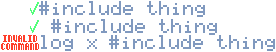

Engle borrows many ideas from C-related languages,
including directives. Directives are special
instructions preceded by an octothorpe (#),
processed before anything else. All directives, including
unusable ones, are saved in the resulting file's header,
for potential use by transcompilers and other programs
that might interpret and use them.
A directive consists of any single line starting with a
“#” symbol, although there can be
any amount of whitespace before the symbol.

Fig. 1: Two directives and a sentence containing an octothorpe.
Lists of Directives
Engle Compiler Directives
These are directives used at compile time:
#echo (Message...)
displays a compiler message. This functionality can be
turned off by the user.
Message is a raw message for the compiler log.
#include (Module)
includes a builtin, installed, or local module.
Module is a module to include, specified in
import notation.
#include (Module) as (Name)
includes a builtin, installed, or local module,
assigning a custom internal name to it.
Module is module to include, written as an
import specifier.
Name is a custom name to reference the module.
#silence
disables debug logging for your whole program by
replace the Log instruction with the Evaluate
instruction.
#silence (Module)
disables debug logging for a single module.
Module is a module to mute, specified by name.